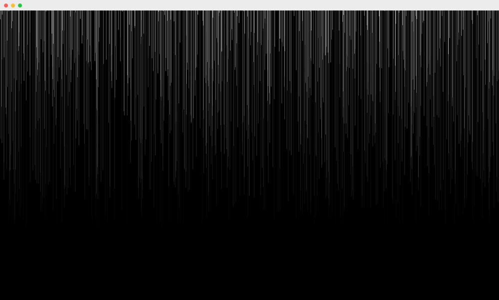

<!DOCTYPE html>
<html lang="en">
  <head>
    <meta charset="utf-8">
    <meta http-equiv="X-UA-Compatible" content="IE=edge">

    <meta property="og:url"               content="https://polyclick.io">
    <meta property="og:type"              content="website">
    <meta property="og:title"             content="polyclick — visual artist &amp; creative coder">
    <meta property="og:description"       content="Visual artist &amp; creative coder attempting to connect the physical and digital world through interactive experiences, installation art and generative design.">
    <meta property="og:site_name"         content="polyclick">
    <meta property="og:image"             content="https://polyclick.io/img/work-solitude-main.jpg">

    <meta name="twitter:card"         content="summary_large_image">
    <meta name="twitter:site"         content="@polyclickkkkk">
    <meta name="twitter:creator"      content="@polyclickkkkk">
    <meta name="twitter:description"  content="Visual artist &amp; creative coder attempting to connect the physical and digital world through interactive experiences, installation art and generative design.">
    <meta name="twitter:title"        content="polyclick — visual artist &amp; creative coder">
    <meta name="twitter:image"        content="https://polyclick.io/img/work-solitude-main.jpg">

    <meta name="viewport" content="width=device-width, initial-scale=1">

    <base href="/" >

    <link rel="stylesheet" href="/css/app.css">
    <link rel="stylesheet" href="https://fonts.googleapis.com/css?family=Cousine:400,400i,700">
    <link rel="stylesheet" href="https://fonts.googleapis.com/css?family=Ubuntu+Mono:700">

    <title>polyclick</title>
  </head>
  <body>

    <!-- main content container -->
    <main></main>

    <!-- footer -->
    <footer>
      <div class="wrap">
        <a href="https://twitter.com/polyclickkkkk" target="_blank">twitter</a> —
        <a href="https://facebook.com/bart.cla" target="_blank">facebook</a> —
        <a href="https://instagram.com/polyclick/" target="_blank">instagram</a> —
        <a href="/contact">more ⤴</a>
      </div>
    </footer>

    <!-- overlay container -->
    <div class="overlay"></div>


    <!-- template: navigable page -->
    <script id="navigable-page-template" type="text">
      <div class="wrap">
        <header>
          <a href="/">
            <div class="name">polyclick</div>
          </a>
          <nav>
            <a href="/">work</a>
            <a href="/what" id="what-nav">what</a>
            <a href="/contact">contact</a>
          </nav>
        </header>
        <div id="content"></div>
      </div>
    </script>

    <!-- template: hero page -->
    <script id="hero-page-template" type="text">
      <div>
        <div id="content"></div>
      </div>
    </script>


    <!-- work: overview -->
    <script id="work-overview" type="text" template="navigable-page-template">
      <a href="work/solitude">
        <figure>
          
          <figcaption>
            <div class="left">#solitude</div>
            <div class="right">interactive installation</div>
          </figcaption>
        </figure>
      </a>

      <a href="work/offfbynight">
        <figure>
          
          <figcaption>
            <div class="left">#offfbynight</div>
            <div class="right">research &amp; development</div>
          </figcaption>
        </figure>
      </a>

      <a href="work/coccodrillo">
        <figure>
          
          <figcaption>
            <div class="left">#coccodrillo</div>
            <div class="right">online browsable book</div>
          </figcaption>
        </figure>
      </a>

      <a href="work/symbiosis">
        <figure>
          
          <figcaption>
            <div class="left">#symbiosis</div>
            <div class="right">openframeworks visual art tool</div>
          </figcaption>
        </figure>
      </a>

      <a href="work/inthegrater">
        <figure>
          
          <figcaption>
            <div class="left">#inthegrater</div>
            <div class="right">interactive installation</div>
          </figcaption>
        </figure>
      </a>
    </script>

    <!-- what page -->
    <script id="what" type="text" template="navigable-page-template">
      <div class="centerer">
        <section class="section-1">
          <h1 class="right gist-title">The Gist</h1>
          <p class="right gist-body">
            Here's the gist for those in a hurry. Looking for a creative coder that knows how to build:
            interactive experiences, 2D/3D web experiences, generative design, data visualizations,
            installation art or audiovisual performaces? Then, look no further, pick up your phone,
            call me or send me a text at +32 486 10 41 81; You can also message me on
            <a href="https://twitter.com/polyclickkkkk" target="_blank">Twitter</a> or
            <a href="https://facebook.com/bart.cla" target="_blank">Facebook</a>.
            Ow yeah, there's also a contact button here somewhere.
          </p>
          <figure></figure>
        </section>
        <section class="section-2">
          <h1 class="statement-title">The Statement</h1>
          <p class="statement-desc">
            "Visual artist & creative coder attempting to connect the physical and digital world through
            interactive experiences, installation art and generative design"
          </p>
          
          <p class="visual-artist">
            <u>visual artist:</u> all the stuff I make has some sort of visual impact; either originating
            from a digital screen, projected onto a surface or occupying a space in the real world.
            You name it, as long as it has an impact on the viewer's visual perception.
          </p>
          <p class="creative-coder">
            <u>creative coder:</u> the core of my whole existence, I’ve been programming since I was 12.
            Since then, I've been successful at keeping myself at the forefront of software development;
            motivated by both my curiousity and constant need for self-improvement.
          </p>
          <p class="interactive-exp">
            <u>interactive experiences:</u> covers all cases where the viewer can interact with the visual
            experience. Most of my work is built for the web, using bleeding edge technologies like:
            WebGL, WebVR, Canvas, Sockets, ...
          </p>
          <p class="installation-art">
            <u>installation art:</u> art pieces that occupy a certain space in our real physical world.
            Things you can touch, feel, hear. Either connected to, or manipulated through, a
            predefined electrical system; think: Arduino's, Sensors, Motors, Computers, Midi Controllers, ...
          </p>
          <p class="generative-design">
            <u>generative design:</u> I'd like to use the term generative art in the broad sense,
            ranging from data visualizations, graphics programming to data-driven or rule-based design.
            To keep it short: everything arty that has some sort of digital system or algorithm at its core.
          </p>
          <ul class="tags thin">
            <li>#openframeworks</li>
            <li>#arduino </li>
            <li>#madmapper</li>
            <li>#ableton</li>
            <li>#dmx</li>
          </ul>
        </section>
      </div>
    </script>


    <!-- contact page -->
    <script id="contact" type="text" template="navigable-page-template">
      <section class="section-1">
        <p>
          <span class="mail-link"><a href="mailto:hello@polyclick.io">hello@polyclick.io</a></span>
          <span class="phone">+32 486 10 41 81</span>
        </p>
      </section>
      <section class="section-2">
        <p>
          <span class="social-link"><a href="https://facebook.com/bart.cla" target="_blank">#facebook</a></span>
          <span class="social-link"><a href="https://twitter.com/polyclickkkkk" target="_blank">#twitter</a></span>
          <span class="social-link"><a href="https://instagram.com/polyclick" target="_blank">#instagram</a></span>
          <span class="social-link"><a href="https://github.com/polyclick" target="_blank">#github</a></span>
          <span class="social-link"><a href="https://polyclick.tumblr.com/" target="_blank">#tumblr</a></span>
          <span class="social-link"><a href="https://soundcloud.com/polyclick" target="_blank">#soundcloud</a></span>
        </p>
      </section>
    </script>


    <!-- work: solitude detail -->
    <script id="work-solitude" type="text" template="hero-page-template">
      <div class="hero"></div>
      <div class="wrap">
        <header>
          <div class="name">#solitude</div>
          <div class="sub thin">interactive installation</div>
        </header>
        <div class="centerer">
          <section class="section-1">
            <p class="intro">
              Solitude is an interactive art installation which criticizes the
              rat race that surrounds us all. Forced by high expectations and
              surrounded by intense impulses we get torn apart between lonely
              emptiness and uneasy voids.
            </p>
            <ul class="tags thin">
              <li>#openframeworks</li>
              <li>#arduino </li>
              <li>#madmapper</li>
              <li>#ableton</li>
              <li>#dmx</li>
            </ul>
            <figure></figure>
            <figure></figure>
            <figure></figure>
          </section>
          <section class="section-2">
            <p class="technical right">
              On the technical side of it, the installation
              consists of six led tubes and a pressure sensitive
              floor. When people walk through the installation,
              the pressure sensitive pads get triggered. Then, an
              Arduino powered circuit communicates the location of the visitor to
              an OpenFrameworks application. These ones &amp; zeroes are then sent
              to an Ableton Max plugin. The plugin then manipulates the background audio through
              various audio filters. At the same time, the
              OpenFrameworks app alteres the animation sequences on
              the led tubes.
            </p>
            <figure></figure>
            <div class="video"><iframe src="https://player.vimeo.com/video/162837848?title=0&byline=0&portrait=0" width="810" height="456" frameborder="0" webkitallowfullscreen mozallowfullscreen allowfullscreen></iframe></div>
          </section>
          <section class="section-3">
            <p class="soundscape">
              The soundscape was mixed together from a list of
              mysterious, glitchy, experimental music tracks.
              Some featured artists are: <a href="https://soundcloud.com/monolake" target="_blank">Monolake</a>,
              <a href="http://www.raster-media.net/artists/senking?c=5" target="_blank">Senking</a>,
              <a href="https://soundcloud.com/kangding-ray" target="_blank">Kanding Ray</a>,
              <a href="http://www.alvanoto.com/?a1=audio" target="_blank">alva noto</a>, &amp;
              <a href="https://soundcloud.com/grischenka" target="_blank">Gricha Lichtenberger</a>.<br/>
              <!--
                <br/>
                Listen
              -->
            </p>
            <figure></figure>
            <figure></figure>
            <p class="credits">
              Credits<br/>
              <br/>
              Curator: <a href="http://kopvzw.be/" target="_blank">KOP VZW</a><br/>
              Concept: <a href="http://nachtcollectief.be/" target="_blank">Nacht Collectief</a><br/>
              Production: <a href="http://www.thaithomas.be/" target="_blank">TAAI</a><br/>
              Soundscape: <a href="/">polyclick</a><br/>
              Photos: <a href="http://www.mathiashannes.com/" target="_blank">Mathias Hannes</a>, <a href="/">polyclick</a>
            </p>
          </section>
        </div>
      </div>
    </script>

    <!-- work: offfbynight detail -->
    <script id="work-offfbynight" type="text" template="hero-page-template">
      <div class="hero"></div>
      <div class="wrap">
        <header>
          <div class="name">#offfbynight</div>
          <div class="sub thin">experimental research &amp; development</div>
        </header>
        <div class="centerer">
          <section class="section-1">
            <ul class="tags thin">
              <li>#webgl</li>
              <li>#shaders</li>
              <li>#threejs</li>
              <li>#cinema4d</li>
              <li>#glsl</li>
            </ul>
            <p class="intro">
              Research project for OFFF By Night. A collection of realtime generated visuals. Built for the web with bleeding edge tech like WebGL
              and GLSL. This research project is commissioned by the sexy web
              agency: <a href="http://mrhenry.be/" target="_blank">Mr Henry</a>, Antwerp. Art and colors are loosely inspired on
              the movie <a href="https://vimeo.com/156078406" target="_blank">Blade Runner</a>.
            </p>
            <figure></figure>
            <figure></figure>
            <figure></figure>
            <figure></figure>
          </section>
          <section class="section-2">
            <p class="blurshader">
              A multilayer blur shader that obscures
              primitive shapes and turns them into an
              animating fluid multi-color gradient.
            </p>
            <figure></figure>
            <figure></figure>
          </section>
          <section class="section-3">
            <p class="technical">
              All scenes are built with the three.js
              framework and rendered to a WebGL
              backed canvas element. Some scenes contain custom written shaders.
            </p>
            <figure></figure>
            <figure></figure>
            <figure></figure>
          </section>
          <section class="section-4">
            <figure></figure>
            <p class="credits right">
              Credits<br/><br/>
              Production: <a href="http://mrhenry.be/" target="_blank">Mr Henry</a><br/>
              Development: <a href="/">polyclick</a><br/>
              Inspiration: <a href="https://www.youtube.com/watch?v=EOSIj_AxxX0" target="_blank">Blade Runner</a>
            </p>
          </section>
        </div>
      </div>
    </script>

    <!-- work: coccodrillo detail -->
    <script id="work-coccodrillo" type="text" template="hero-page-template">
      <div class="hero"></div>
      <div class="wrap">
        <header>
          <div class="name">#coccodrillo</div>
          <div class="sub thin">three dimensional browsable book</div>
        </header>
        <div class="centerer">
          <section class="section-1">
            <p class="intro">
              An interactive, browsable online book built with 3D technology for
              the browser. This project features a custom vertex shader to curl
              the book pages realistically. Design &amp; concept by <a href="http://mrhenry.be/" target="_blank">Mr Henry</a>.
            </p>
            <figure></figure>
            <figure></figure>
            <figure></figure>
          </section>
          <section class="section-2">
            <ul class="tags thin">
              <li>#webgl</li>
              <li>#shaders</li>
              <li>#threejs</li>
              <li>#cinema4d</li>
              <li>#glsl</li>
            </ul>
            <figure></figure>
            <figure></figure>
          </section>
          <section class="section-3">
            <figure></figure>
            <figure></figure>
            <p class="credits">
              Credits<br/><br/>
              Concept: <a href="http://mrhenry.be/" target="_blank">Mr Henry</a><br/>
              Design: <a href="http://mrhenry.be/" target="_blank">Mr Henry</a><br/>
              Development: <a href="/">polyclick</a><br/>
              Model: <a href="http://revolver.be/" target="_blank">REVOLVER</a>
            </p>
          </section>
        </div>
      </div>
    </script>

    <!-- work: symbiosis detail -->
    <script id="work-symbiosis" type="text" template="hero-page-template">
      <div class="hero"></div>
      <div class="wrap">
        <header>
          <div class="name">#symbiosis</div>
          <div class="sub thin">openframeworks visual art tool</div>
        </header>
        <div class="centerer">
          <section class="section-1">
            <p class="intro">
              Symbiosis is a multipurpose visual art tool written in c++ using
              the amazing OpenFrameworks library. The software was field-tested on multiple occassions.
              For example, it was used as a creative coding tool for a visual mapping at
              the <a href="https://www.pukkelpop.be/" target="_blank">Pukkelpop</a> festival in Hasselt.
            </p>
            <figure></figure>
            <figure></figure>
            <figure></figure>
            <figure></figure>
          </section>
          <section class="section-2">
            <p class="creativecode">
              As a creative coding toolkit, it allows for quick and easy adapation to fit
              the context it needs to operate in. It serves best as a starter kit for
              creative coding. Its visual output can be routed to any screen, projector,
              output file, still frame or piped into another application over Syphon.
            </p>
            <figure></figure>
            <figure></figure>
          </section>
          <section class="section-3">
            <ul class="tags thin">
              <li>#openframeworks</li>
              <li>#audioanalysis</li>
              <li>#shaders</li>
              <li>#syphon</li>
              <li>#midi</li>
              <li>#osc</li>
            </ul>
            <p class="events">
              This creative coding toolkit has been used on
              several events, including the <a href="http://www.rsrecords.com/" target="_blank">R&amp;S Record Label</a>
              Weekender at <a href="http://ampere-antwerp.com/" target="_blank">Ampère</a>; <a href="https://www.pukkelpop.be" target="_blank">Pukkelpop</a> festival in
              Hasselt; <a href="http://www.nachtcollectief.be/" target="_blank">Nacht Collectief</a> A/V Showcase in
              Brussels &amp; Antwerp.
            </p>
            <figure></figure>
            <figure></figure>
            <figure></figure>
          </section>
        </div>
      </div>
    </script>

    <!-- work: inthegrater detail -->
    <script id="work-inthegrater" type="text" template="hero-page-template">
      <div class="hero"></div>
      <div class="wrap">
        <header>
          <div class="name">#inthegrater</div>
          <div class="sub thin">interactive installation</div>
        </header>
        <div class="centerer">
          <section class="section-1">
            <ul class="tags thin">
              <li>#leapmotion</li>
              <li>#webgl</li>
              <li>#shaders</li>
              <li>#glsl</li>
            </ul>
            <p class="intro">
              An interactive installation built using web technologies; presented at
              the <a href="http://www.integratedconf.org/" target="_blank">Integrated</a> conference after-party: "In The Grater" at <a href="http://ampere-antwerp.com/" target="_blank">Ampère</a> Antwerp. The
              installation features four different hand gestures manipulating
              four hypnotizing interactive scenes.
            </p>
            <p class="gestures">
              Gesture recognition was realized using
              a Leap Motion. The raw input of the user's hand movements were sent
              to a computer displaying an interactive WebGL scene.
            </p>
            <figure></figure>
            <figure></figure>
            <figure></figure>
            <figure></figure>
            <figure></figure>
          </section>
        </div>
      </div>
    </script>

    <!-- challenge: zerotohero detail -->
    <script id="challenge-zerotohero" type="text" template="hero-page-template">
      <div class="hero"></div>
      <div class="wrap">
        <header>
          <div class="name">#zerotohero</div>
          <div class="sub thin">daily music production challenge</div>
        </header>
        <div class="centerer"></div>
      </div>
    </script>

    <!-- challenge section template -->
    <script class="challenge-zerotohero-section-templates" type="text" slots="4" has-text="true">
      <section class="section-template-1">
        <p></p>
        <div class="video"><iframe width="724" height="407" frameborder="0" allowfullscreen></iframe></div>
        <div class="video"><iframe width="740" height="416" frameborder="0" allowfullscreen></iframe></div>
        <div class="video"><iframe width="768" height="432" frameborder="0" allowfullscreen></iframe></div>
        <div class="video"><iframe width="750" height="421" frameborder="0" allowfullscreen></iframe></div>
      </section>
    </script>

    <!-- challenge section template -->
    <script class="challenge-zerotohero-section-templates" type="text" slots="2" has-text="true">
      <section class="section-template-2">
        <p></p>
        <div class="video"><iframe width="766" height="430" frameborder="0" allowfullscreen></iframe></div>
        <div class="video"><iframe width="614" height="345" frameborder="0" allowfullscreen></iframe></div>
      </section>
    </script>

    <!-- challenge section template -->
    <script class="challenge-zerotohero-section-templates" type="text" slots="3" has-text="true">
      <section class="section-template-3">
        <p></p>
        <div class="video"><iframe width="678" height="381" frameborder="0" allowfullscreen></iframe></div>
        <div class="video"><iframe width="752" height="423" frameborder="0" allowfullscreen></iframe></div>
        <div class="video"><iframe width="824" height="463" frameborder="0" allowfullscreen></iframe></div>
      </section>
    </script>


    <!-- google analytics -->
    <script>
      (function(i,s,o,g,r,a,m){i['GoogleAnalyticsObject']=r;i[r]=i[r]||function(){
      (i[r].q=i[r].q||[]).push(arguments)},i[r].l=1*new Date();a=s.createElement(o),
      m=s.getElementsByTagName(o)[0];a.async=1;a.src=g;m.parentNode.insertBefore(a,m)
      })(window,document,'script','https://www.google-analytics.com/analytics.js','ga');

      ga('create', 'UA-62395110-1', 'auto');

    </script>

    <script src="lib/system.js"></script>
    <script src="config.js"></script>
    <script>System.import('./js/app')</script>
  </body>
</html>
